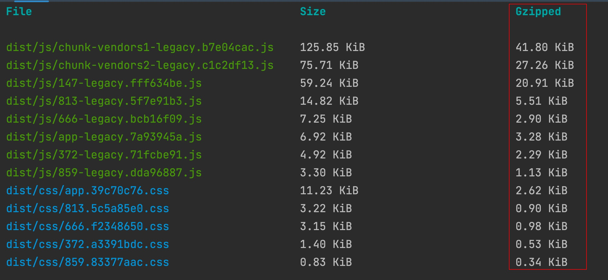
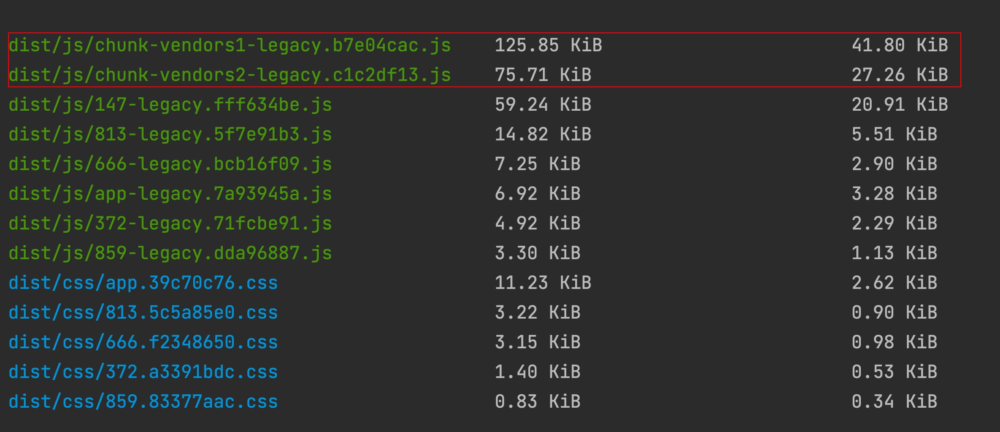
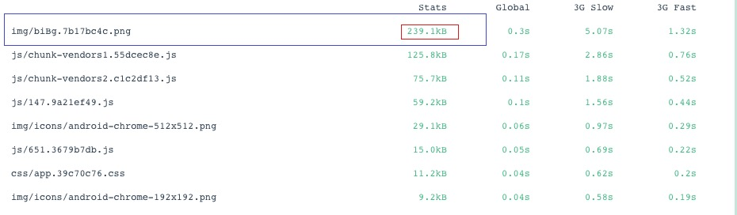
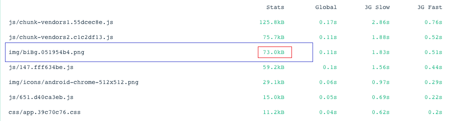

功能
-打包开启gzip压缩
-打包分离公共代码
-打包压缩图片
-组件按需加载
-全局scss变量
-移动端布局（pxtorem）
-axios请求API封装
-常用工具函数（节流，防抖，深克隆等）
-service worker离线缓存
-后续还会添加更多功能
打包压缩gzip
首先安装 compression-webpack-plugin
yarn add compression-webpack-plugin -D (开发依赖)
然后在vue.config.js文件中添加以下代码开启
const CompressionWebpackPlugin = require("compression-webpack-plugin");
module.exports = defineConfig({
configureWebpack: (config) => {
if (isProduction) {
config.plugins.push(new CompressionWebpackPlugin()); //开启gzip
}
},
});
随后在命令行运行
yarn build
可以看到打包已经产出了gzip格式的文件，比原文件体积压缩了有百分之60以上。 
打包分离公共代码
在vue.config.js文件中添加一下代码
module.exports = defineConfig({
configureWebpack: (config) => {
config.optimization = {
splitChunks: {
cacheGroups: {
vendors1: {
name: "chunk-vendors1",
test: /[\\/]node_modules[\\/](vue|vant)/, // 把vue,vant打包在一起
priority: 20,
chunks: "initial",
},
vendors2: {
name: "chunk-vendors2",
test: /[\\/]node_modules[\\/]/, // 余下的三方库打包在一起
priority: 10,
chunks: "initial",
},
},
},
};
},
});
查看效果 
打包压缩图片
首先安装 image-webpack-loader
yarn add compression-webpack-plugin -D (开发依赖)
如果遇到打包失败（网速原因东西下载不完整导致）就使用cnpm安装
cnpm i image-webpack-loader -D
然后在vue.config.js文件中添加以下代码开启
module.exports = defineConfig({
chainWebpack: (config) => {
config.module
.rule("images")
.test(/\.(png|jpe?g|gif)(\?.*)?$/)
.use("image-webpack-loader")
.loader("image-webpack-loader")
.options({ bypassOnDebug: true })
.end();
},
});
随后在命令行运行
yarn build
可以看到打包产出了图片文件体积，比原文件体积压缩了有百分之70以上。
压缩前

压缩后
